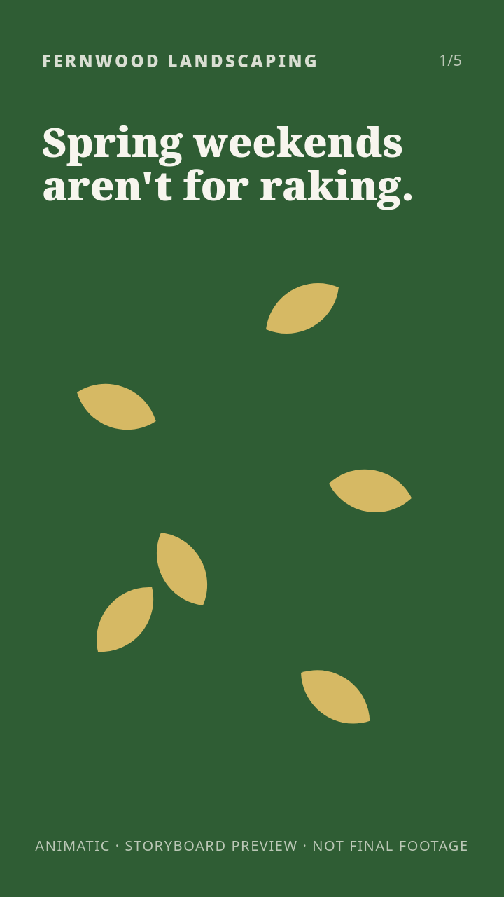
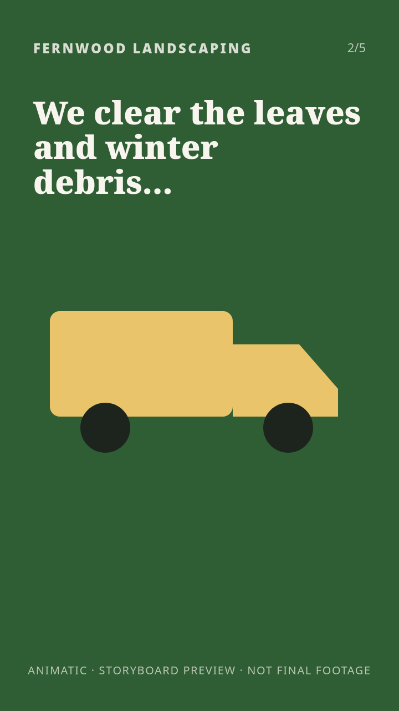
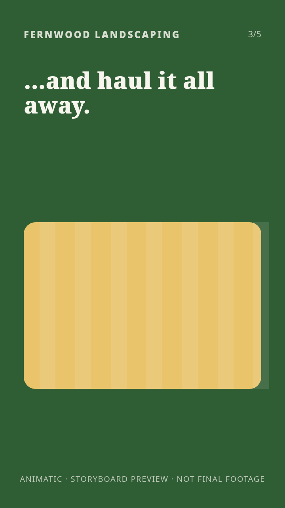
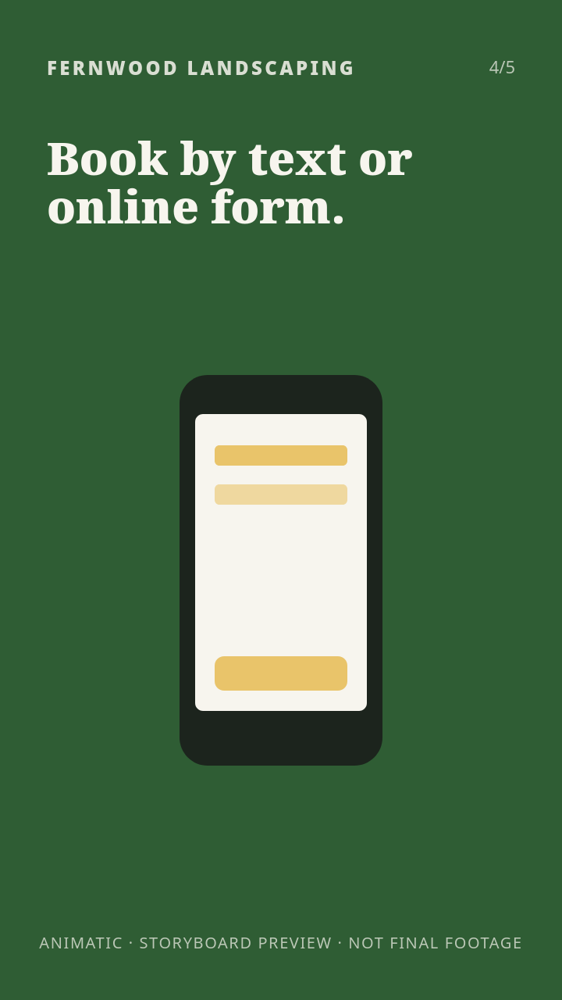
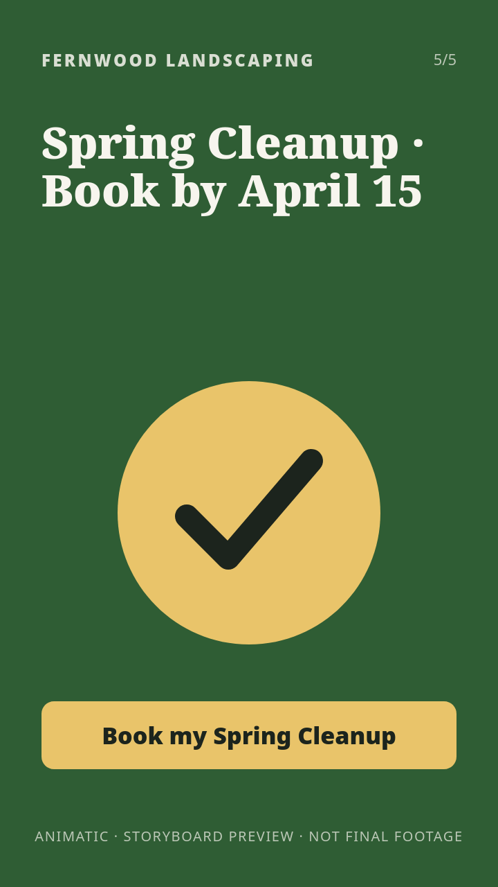

Spring Cleanup: advertising concepts
Prepared for Fernwood Landscaping · Standard · Creative Pack · QA PASSED
Demonstration. Fictional business and documents; all visuals are storyboard frames rendered from shapes and type. No images were generated and no paid services were used.
1. Product & offer
| Description | One-visit spring yard cleanup: leaves and winter debris removed and hauled away, beds cleared, perennials cut back, first mow and edge. |
| Price | $249 flat for yards up to 5,000 sq ft; larger yards quoted after a photo review |
| Audience | Homeowners in Maple Grove who want the yard ready for spring without spending a weekend on it |
| Offer | Book by April 15 for an April visit. Visits scheduled in booking order, weather permitting; flat price applies to yards up to 5,000 sq ft. |
2. Claims we may use
Only verified claims appear in ads. Unverified or rejected claims are listed so nobody adds them later.
| ID | Claim | Status | Evidence / note |
|---|---|---|---|
| K1 | Leaves and winter debris are removed and hauled away | verified | Fernwood service sheet 2027, page 1 (fictional) |
| K2 | $249 flat price for yards up to 5,000 sq ft | verified | Fernwood 2027 price list (fictional) |
| K3 | Book by text or online form | verified | Fernwood service sheet 2027, page 2 (fictional) |
| K4 | Most yards are finished in a single visit | unverified | Client believes this but has no job records yet. Not used in any ad until records exist. |
| K5 | Eco-friendly cleanup | rejected | Vague environmental claim. Would need a specific, supported statement (e.g. what happens to hauled debris). |
3. Benefits
| ID | Feature | Customer benefit | Claims |
|---|---|---|---|
| B1 | Debris removed and hauled away | No leaf piles or yard-waste bags left at the curb | K1 |
| B2 | Flat price for most yards | Know the price before anyone arrives | K2 |
| B3 | Book by text or form | Book in a minute, no phone tag | K3 |
4. Concepts, copy and image prompts
Character counts are shown against each platform's limit.
Your weekend back
Angle: Time: skip the weekend of raking and bagging.
Hook: “Spend spring weekends on anything but raking.”
Benefits: B1, B3 · Claims used: K1, K3
Meta
| primary | Skip the raking weekend. Fernwood's Spring Cleanup clears leaves and winter debris and hauls it all away. | 105/125 |
| primary | Book your Spring Cleanup by text or online. We clear the debris and haul it away. | 81/125 |
| headline | Get your spring weekends back | 29/40 |
| headline | Spring cleanup, hauled away | 27/40 |
| description | Book by April 15 | 16/30 |
| headlines | Spring Yard Cleanup | 19/30 |
| headlines | Debris Hauled Away | 18/30 |
| headlines | Book by Text or Online | 22/30 |
| headlines | Serving Maple Grove | 19/30 |
| descriptions | Leaves and winter debris removed and hauled away. Book your spring visit today. | 79/90 |
| descriptions | One visit clears beds, cuts back perennials and edges. Book by text or form. | 76/90 |
Image prompts
- I1 · 1:1 · medium
Bright early-spring suburban backyard just after a cleanup: freshly edged lawn, clean mulched flower beds, a wheelbarrow and rake leaning on a wooden fence, soft morning light, wide shot at eye level, natural photographic style, calm and tidy
Avoid: no text, no letters, no logos, no people's faces, no brand names. Overlay text: “Get your spring weekends back” - I2 · 9:16 · medium
Vertical close-up of a neatly edged lawn border beside a cleared flower bed with new green shoots, dew on grass, shallow depth of field, early spring morning light, natural photographic style
Avoid: no text, no letters, no logos, no people, no brand names. Overlay text: “Debris hauled away”
Client decision: ☐ Approved ☐ Changes requested ☐ Rejected Notes: ____________________
One flat price
Angle: Price clarity: a flat price for most yards, known up front.
Hook: “Spring cleanup for one flat price.”
Benefits: B2, B3 · Claims used: K2, K3
Meta
| primary | Spring Cleanup for yards up to 5,000 sq ft: $249 flat. Book by text or online form. | 83/125 |
| headline | $249 flat spring cleanup | 24/40 |
| headline | Know the price up front | 23/40 |
| description | Yards up to 5,000 sq ft | 23/30 |
| headlines | $249 Flat Spring Cleanup | 24/30 |
| headlines | Yards Up to 5,000 sq ft | 23/30 |
| headlines | Book by Text or Online | 22/30 |
| descriptions | Flat $249 for yards up to 5,000 sq ft. Larger yards quoted from a photo. | 72/90 |
| descriptions | Leaves and debris hauled away. Book your April visit by April 15. | 65/90 |
Image prompts
- I3 · 1:1 · medium
Overhead view of a small tidy suburban lawn and garden beds in early spring, clean edges, raked and mulched, geometric composition with empty space at the top for a price label, soft even daylight, natural photographic style
Avoid: no text, no letters, no numbers, no logos, no people. Overlay text: “$249 flat · yards up to 5,000 sq ft” - I5 · 9:16 · medium
Vertical view down a tidy side yard in early spring: raked lawn strip, clean mulched bed along a fence, empty space in the upper third for a price label, soft overcast daylight, natural photographic style
Avoid: no text, no letters, no numbers, no logos, no people. Overlay text: “$249 flat · yards up to 5,000 sq ft”
Client decision: ☐ Approved ☐ Changes requested ☐ Rejected Notes: ____________________
Curb-ready spring
Angle: Pride: the yard looks cared-for the first warm weekend.
Hook: “Be the tidy yard on the block this spring.”
Benefits: B1 · Claims used: K1
Meta
| primary | Beds cleared, perennials cut back, debris hauled away. Fernwood's Spring Cleanup gets your yard ready for spring. | 113/125 |
| headline | Ready for the first warm day | 28/40 |
| description | Maple Grove & nearby | 20/30 |
| headlines | Spring Cleanup Maple Grove | 26/30 |
| headlines | Beds Cleared & Edged | 20/30 |
| headlines | Debris Hauled Away | 18/30 |
| descriptions | Beds cleared, perennials cut back and debris hauled away in one scheduled visit. | 80/90 |
| descriptions | Serving Maple Grove, Westbrook and Linden Park. Book by text or online form. | 76/90 |
Image prompts
- I4 · 4:5 · medium
Front yard of a modest suburban house in early spring after a cleanup, crisp lawn edges along the sidewalk, cleared flower beds, blue sky, eye-level view from across the street, natural photographic style
Avoid: no text, no letters, no house numbers, no logos, no people, no cars with visible plates. Overlay text: “Ready for the first warm day” - I6 · 9:16 · medium
Vertical eye-level shot of a cleared front flower bed with fresh mulch and crisp lawn edge beside a front walkway in early spring, morning sun, shallow depth of field, natural photographic style
Avoid: no text, no letters, no house numbers, no logos, no people. Overlay text: “Ready for the first warm day”
Client decision: ☐ Approved ☐ Changes requested ☐ Rejected Notes: ____________________
5. Storyboards
S1 · concept C1 · 9:16 · 15 s





6. Landing page
Open the landing page draft (built and QA-checked; not published).
7. Generation cost estimate
openai-gpt-image-2: $1.20 (incl. 3 attempts per image and a safety margin) vs package budget $5. Token-priced; 1024x1024 estimates from OpenAI pricing summaries (Sep 2026). Edits with reference images cost more. Provider availability: unverified. Video: local animatic only (no paid video): Storyboard animatic: designed frames and captions, not filmed or generated footage.
8. Creative QA
| Severity | Where | Finding |
|---|---|---|
| PASS | No findings. | |
9. Scope
Not included: Running your ads, ad-account setup, targeting or ad spend (you pay the platform directly); Any promise of clicks, sales or results; Filmed video, voice-over actors, music licensing, or AI video clips (AI video can be quoted separately if a provider is available); Claims you cannot support with evidence: health, medical, financial, legal or political claims are out of scope; Real people's likenesses, celebrities, competitors' trademarks or copyrighted characters; Stock photo licences; generated images may need retouching for fine details (hands, small text).
Approval: nothing is generated or published until you approve concepts above. Approved by: ______________________ Date: __________